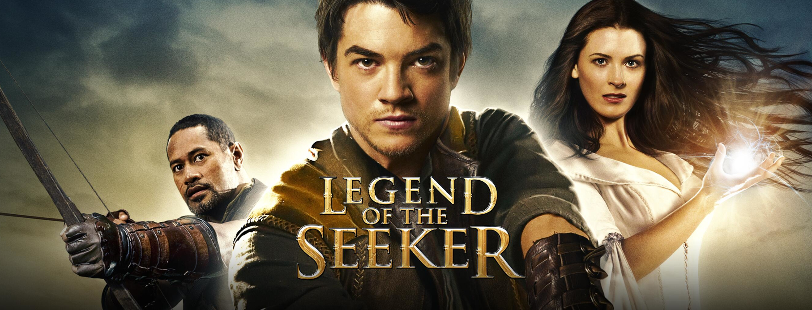
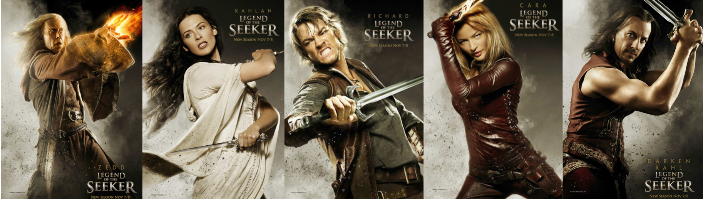

Річард Сайфер був звичайним провідником в Оленячому лісі в Вестландії поки не врятував дивну дівчину Келен Амнелл, яка виявилася Сповідницею, магом особливої касти. Та познайомила Річарда з Великим чарівником Зеддікусом З'ул Зорандером. Останній назвав Річарда Шукачем Істини, єдиним чарівником, який за передбаченням може здолати злого мага Даркена Рала, заволодів землями Д'Гара. Отримавши від Зеда Меч Істини, Річард, який ніколи не бував за межами Вестландії, в компанії своїх нових знайомих відправляється в землі Д'Гара, щоб виправдати пророцтво.
«Легенда про Шукача» (англ. Legend of the Seeker) — американський фентезійний пригодницький телесеріал 2008—2010 років, заснований на серії романів Меч істини письменника Террі Гудкайнда. Прем'єра відбулася 1 листопада 2008 року, телесеріал нараховує два сезони, поки його не скасували в 2010 році. Телесеріал має віддалене відношення до сюжету книги, особливо у фіналі. Взяті основні персонажі й образи, цитуються окремі ситуації, але, в цілому, сюжет серйозно перебудований.
Спочатку телесеріал називався «Перше правило чарівника» (на честь першої книги в серії «Меч істини»). Проте пізніше шоу переназвали на «Легенду про Шукача» за пропозицією Гудкайнда. Продюсери хотіли диференціювати телешоу від книг, а тому це надало би їм можливість висвітлити історію з усіх книг серії. 